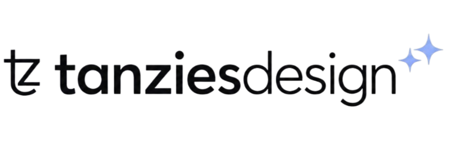

About Kerala Timetable
Welcome to Kerala Timetable, the fastest-growing independent digital hub dedicated to engineering and high school students across Kerala. We know exactly how frustrating it is to navigate through cluttered, ad-heavy websites just to find a simple exam date or a study module.
Built by students, for students, our platform is engineered to be a centralized, lightning-fast resource engine. We specialize in aggregating real-time academic schedules, high-yield study materials, and official university alerts for APJ Abdul Kalam Technological University (KTU) B.Tech programs..
What We Offer
Everything you need to ace your KTU semester exams
Previous Year Questions (PYQs)
Stop wasting time searching for past papers. We host a massive, instantly searchable archive of KTU PYQs. Just type your course code, and download high-quality PDFs with zero wait times.
Syllabus-Oriented Notes
Access concise, high-yield study notes crafted specifically for the KTU 2024 Scheme and 2019 Scheme. Our module-wise PDFs help you focus strictly on what matters for your exams.
Live Exam Timetables
We provide meticulously organized, easy-to-read exam schedules for regular and supplementary exams. Our custom dashboards ensure you never miss a KTU, SSLC, or Plus Two exam date again.
Instant WhatsApp Community
Join 6,000+ students in our official WhatsApp channel. Get real-time alerts for university result declarations, timetable shifts, and immediate access to newly uploaded study materials.
Why We Are Different
Clean & Distraction-Free
No pop-unders, no hidden redirects, and no annoying spam. Just the pure academic information you need.
Automated Intelligence
Powered by automated bots, live server status checkers, and AI extraction to bring you real-time updates instantly.
100% Verified Mirrors
Every PDF timetable and study note is hosted on verified cloud storage for safe, instant downloading even when KTU is down.
Official Partners

Tanziesdesign
Social Media Design PartnerCrafting official promotional campaigns, visual identity, and social post designs for the Kerala Timetable student community.
View Portfolio